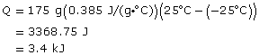
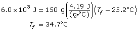
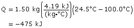
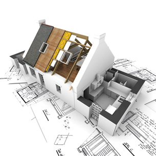

Module 1—Thinking Energy
 Self-Check
Self-Check
SC 5. Calculate the energy required to increase the temperature of a 175-g piece of copper from –25.0ºC to 25.0ºC.
SC 6. 6.0 x 103 J of energy is added to 150 g of water at 25.2ºC. Calculate the final temperature of the water.
SC 7. Calculate the energy released by 1.50 kg of hot water at 100.0ºC as it cools to room temperature (assume 24.5ºC).
Self-Check Answers
Contact your teacher if your answers vary significantly from the answers provided here.
SC 5.

SC 6.

SC 7.

475 kJ are released from the hot water as it cools.
 Going Beyond
Going Beyond

© Franck Boston /shutterstock
Many new homes are being constructed in Alberta, and a large number
of these buildings have highly energy-efficient designs. Use the
Internet to find out more about the term R-2000. Find
standards for new home construction, and compare these standards to
construction practices of ten or more years ago. For example, you may
wish to compare the design and materials used in your own home to those
that meet R-2000 standards. How important is insulation and the
specific heat capacity of materials to R-2000 design?